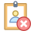

<div class="topnav" >
    
    <a routerLink="/selectClient" >  Client Existant</a>
    <a routerLink="/newCli" >  Nouveau Client</a>
    <a routerLink="/Snavbarop" >  Opérations sans Client</a>
</div> 
<app-acceuil></app-acceuil>
<router-outlet></router-outlet> 